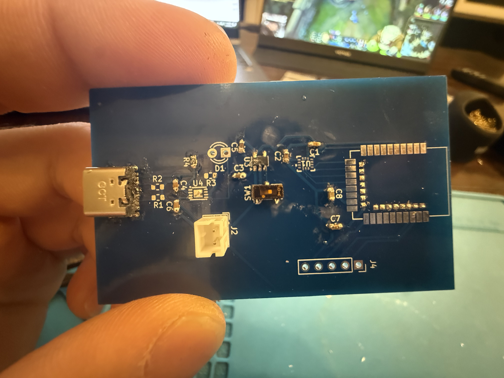
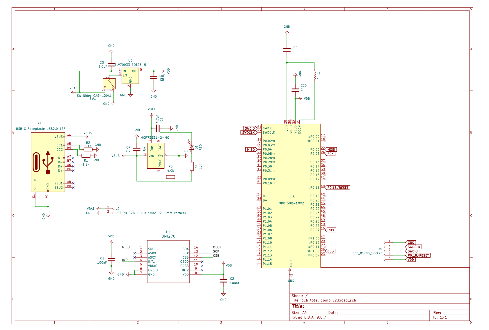
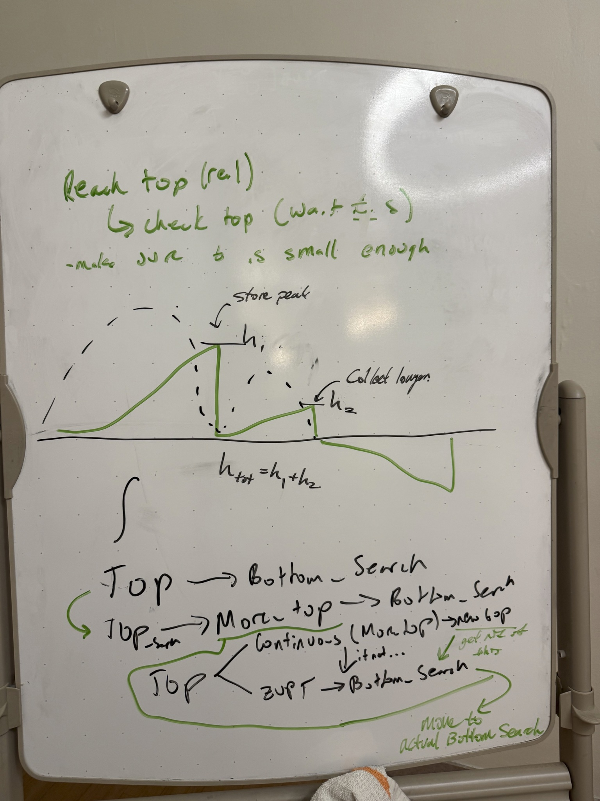
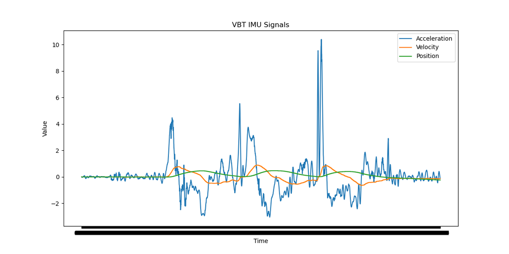
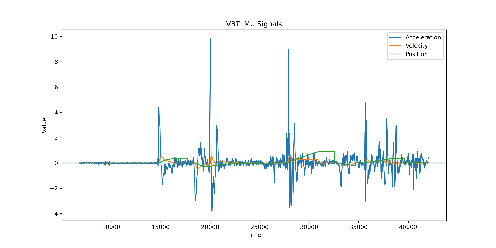

An IMU-based velocity-based-training (VBT) device and app, built with two co-founders as my first real startup attempt. VBT is currently locked behind expensive, complicated equipment aimed at elite athletics and pro lifting labs. Tachyon's whole premise is that an average lifter chasing progressive overload deserves the same feedback loop - so we're building a bar-mounted IMU that streams live rep data to a phone, with zero setup fuss.


Velocity-based training is one of the most useful tools in strength and conditioning: bar speed tells you, rep by rep, whether you're actually training the quality you intend to (max strength, power, hypertrophy) instead of guessing off a instinct. Today it lives almost entirely in university sports-science labs and professional weight rooms: linear position transducers and optical systems that cost hundreds to thousands of dollars, need to be clamped to a rack, cabled to a laptop, and calibrated before every session.
Our mission is to take the underlying value of VBT; knowing your velocity, knowing when a set stops being productive, knowing how much load to add or take off, and put it in the hands of the average lifter, not just the athletes and labs that can afford commercial gear. Tachyon is our attempt at that: an IMU that clips onto the bar, a firmware stack that turns raw accelerometer and gyro data into an accurate rep velocity, and an app that tells you when to rack the bar and what to load next.
Here's what we're holding ourselves to, and where we currently stand on each.
Clip the device on the bar, and have your phone handy - thats it!
The estimate needs to hold up against a commercial reference, not just look clean in isolation (see Section 06).
Priced for an individual lifter, not a university sports-science budget. V1 is currently about $30–40 in prototype hardware, using primarily single-unit DigiKey pricing; this is intentionally conservative and should fall with volume sourcing and PCB scale.
A 250 mAh LiPo and an estimated ~2.1 mA active draw give ~95 hours after a conservative 20% capacity derating, so V1 is designed around roughly 70–100 hours of continuous active use.
Turning raw accelerometer data into a trustworthy velocity number is the hard part of this project, and we built the rep-detection and filtering pipeline ourselves.

Reliable rep detection meant translating the biomechanics of a lift into something the IMU could recognize. We broke down our own reps into distinct phases - rest, descent, direction change, concentric motion, and return to rest - then used those patterns to define the state transitions and thresholds needed to detect real reps while rejecting noise and unintended movement.
For early testing, I strapped the IMU and MCU to a water bottle and recorded squat-like repetitions while streaming the sensor data. It was a rough setup, but it gave us a repeatable physical input for debugging the full signal-processing pipeline.


These traces show the progression of the firmware rather than an unfiltered “before” and filtered “after.” The early pipeline already applied basic filtering before integrating acceleration into velocity and position, but small errors still accumulated across successive reps. As the algorithm developed, we added more deliberate filtering alongside zero-velocity update (ZUPT) logic and rep detection. Detecting when the device is stationary gives the firmware opportunities to reset the velocity estimate, limiting how much integration error carries from one rep into the next. The result is a much more stable position estimate while still preserving the motion of each rep.
So the state of the project: hardware is built and stable, and we have a firmware and filtering pipeline that we designed and debugged ourselves and that visibly cleans up the raw signal. What we don't have yet is proof that the resulting velocity number is accurate, clean-looking is not the same as correct, and that's the next milestone.
We're setting up a side-by-side benchmark against a commerical system (Perch), working with the Duke Athletics weight room to compare Tachyon's live output against a Perch VBT system on the same reps. That comparison is what will tell us whether our velocity is close enough to trust, or whether it sends us back to the filtering pipeline before we touch housing or app polish.